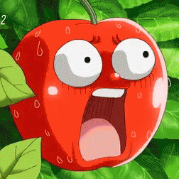

Ve och fasa!
Apple visste att någon dag så skulle det här hända. Hon var känd för att vara ett sött äpple och förr eller senare skulle någon människa upptäcka det. Att hon eller någon av hennes systrar skulle visa sig vackrare än drottningen förvånade henne inte alls, men hon trodde inte att det skulle ske så fort.